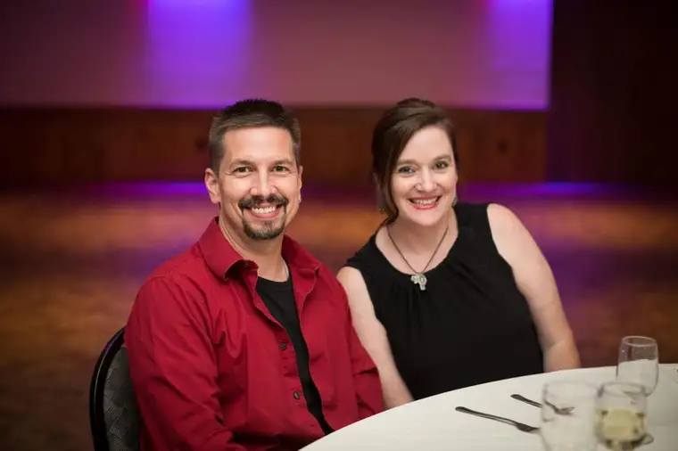

“I love you, Roxane.”The words reach deeply into my heart this quiet evening as my husband and I glance out the window from my mother’s sixth-floor apartment unit in Bismarck.
We’re confronting the reality that we are snowed in for a few days at Christmas time — a fate that feels more like a blessing than a curse this moment.
After all, we’re together — literally, and beyond that, too. We have made it through 25 years of marriage, and right now, that feels like something.
Our actual silver anniversary happened several weeks ago. But it came, as always, squashed alongside Thanksgiving, our middle son’s birthday and a race for the holidays.
Now that some time has passed, and the bustle of the season has subsided some, it’s easier to reflect on the significance of this quarter-century celebration.
At one time, I envisioned our 25th taking place on a tropical island somewhere, and us sipping some luscious drink from a coconut overflowing with fresh pineapple and maraschino cherries.
Instead, our anniversary came subdued with a side of humor — the kind that has been so plentiful within our marriage.
Not one to plan too far ahead, my dear hubby had proudly booked a hotel room for our special day, just 15 minutes from where our children would be with my in-laws for Thanksgiving, in Alexandria, Minn.
I’ll admit to being impressed he handled it all so deftly. But when we arrived for check-in, the clerk looked at us sideways. “I’m sorry. There’s no one under that name,” she said.
Confidently, my knight-in-shining-armor produced the confirmation number from his phone, and I looked at him admiringly. We’ve really come a long way, I thought.
“Uh, this booking is for Alexandria, Virginia,” the clerk announced. “But if it makes you feel any better, you’re not the first to do this.”
It was all so reminiscent of our honeymoon in Florida some 25 years earlier, when we’d failed to figure out how to engage the air conditioning in our rental car until just before we had to return it to the agency.
The scene was wrong yet right in every way. How many details had we missed in all these years, and yet somehow, despite ourselves, we’d survived, and in some moments, even thrived.
It had become clear at some point that we weren’t doing the holding up of this union on our own; that something bigger had been smoothing out all the frayed knots we’d managed to create as we went tripping through life together.
In the end, we got the room and a few laughs. And though that night wasn’t the island event I’d imagined, I’ve since realized that in many ways, it was so much better.
During these last weeks, I’ve thought more about what it means to reach 25 years, and what in those several decades counts most.
And I’ve concluded that most of all, it’s the five people who didn’t exist the day we said our “I dos” but have become such an integral part of us now — our children.
They’ve caused us to cry tears of joy and anguish and everything in between, and if I could blame anyone on why we never made it to that resort, it would have to be them.
But I’d never hold it against them, because frankly, they’re worth all the trips to Belize in the world. And since we’re still in the middle of getting them launched, maybe it’s just not yet time for that refreshing reprieve drink.
Maybe it will never happen. Or maybe it will, but I’m not sure how much it really matters either way.
When I start down the road of “what ifs,” all becomes clear: warm sand, aqua waters and a book on the beach are as nothing next to what we have right here in the people who comprise “us.”
Comparing a life without all the messiness that comes with children to the life we’ve embraced instead, I find the second-rate hotel room in Minnesota beating the quaint rental cottage in the French countryside every time.
Imagining life with even one of us missing, yet having all the perks of a dream vacation at the ready, leaves me empty. It’s then that I realize what a 25th year of marriage really is about.
It’s not about another diamond, or a car without dents, or an immaculately manicured yard with labeled flowers.
It’s about finding ourselves holed up together at my mother’s place on the prairie, and realizing that somehow, we’ve made it, and not only that, but we’ve brought five other people along with us who didn’t exist at the start of our journey together.
It’s being awakened to the reality of how exponentially they’ve stretched our worlds and how we’ve stretched one another’s, only to discover something within we’d never have thought possible at the beginning.
And it means turning toward this guy on a cold winter’s night, this man who has come to mean so much to me, and hearing myself echoing back, “I love, you, too.”
[For the sake of having a repository for my newspaper columns and articles, I reprint them here, with permission, a week after their run date. The preceding ran in The Forum newspaper on Dec. 31, 2016.]